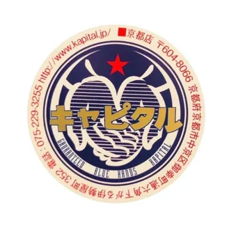
KAP][TAL
IS COMING FOR YOUR CULTURE
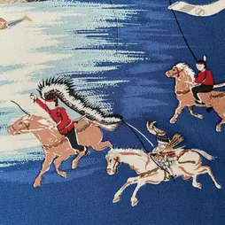
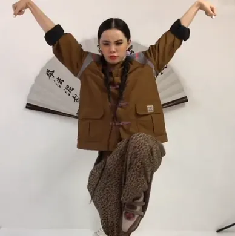
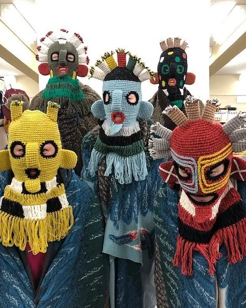
IS COMING FOR YOUR CULTURE
IS COMING FOR YOUR CULTURE
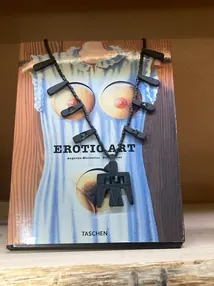
Alec
Oct, 2023
I’M HERE TO SELL YOUR CULTURE. I'M HERE TO SELL YOUR HARDSHIP. I'M HERE TO SELL YOUR PAIN.
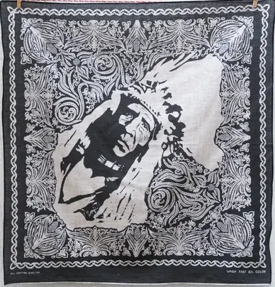
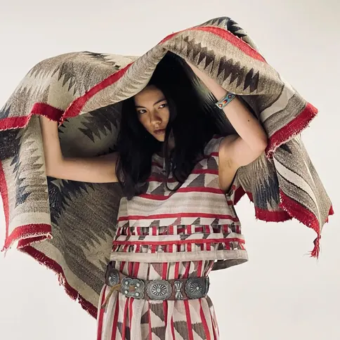
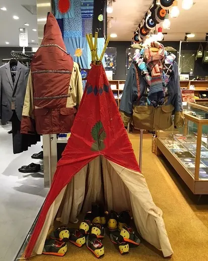
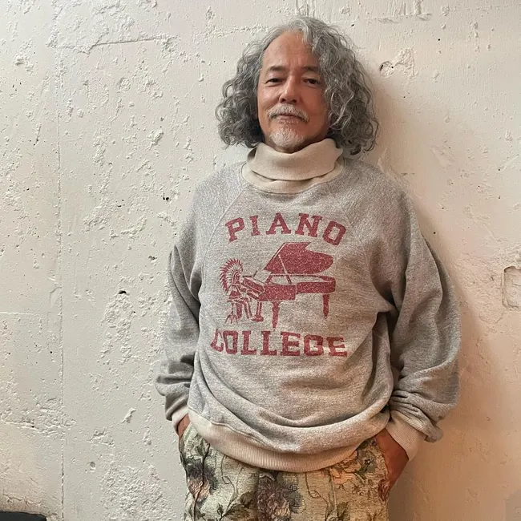
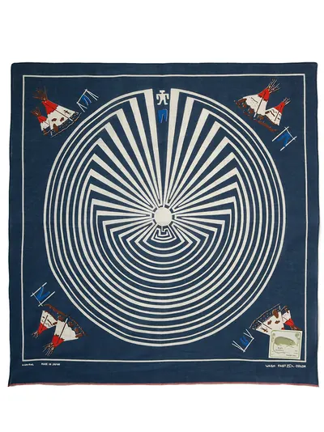
Our society is no stranger to cultural appropriation. Fashion brands, celebrities, and sports teams are some of the entities that have routinely appropriated foreign cultures. While the intentions behind the appropriation are circumstantial, it can and often marginalizes these communities through the perverse use of their sacred culture. One fashion brand that consistently references indigenous culture is the Japanese brand Kapital. Although Kapital is not necessarily a mainstream staple in fashion, they are often lauded by enthusiasts for their high quality denim and culturally eclectic designs. Common influences include Japanese culture, American hippie culture, and as already mentioned: indigenous iconography. While this mix of culture has helped in creating a unique image for Kapital, the company has profited off of severely marginalized groups while distorting their cultural symbols.
The brand was initially founded in 1984 by Toshikiyo Hirata as a denim factory in Kojima, Japan which is now commonly regarded as the Japanese capital of premium denim. Hirata, who was formerly a karate instructor in the U.S, became inspired by western denim and thereafter started his own enterprise. He would go on to create a denim factory and his own vintage store which would plant the initial seeds of Kapital. However, it was his son, Kiro Hirata, who would go on to further develop the brand. Like his father, Kiro traveled to the U.S and became enamored with western fashion and later-on joined his dad at Kapital.
Despite their backgrounds, their connection to indigenous culture is unclear, yet they habitually use indigenous symbols in their designs. Indigenous-inspired regalia sold by Kapital include squash blossoms, concho belts, or a somber indigenous chief as the focal point for a bandana. When visiting their stores in Tokyo, the influence and abundance of indigenous regalia is evident to any customer, as they find these symbols on packaging, decorations, and on the clothes themselves. The most egregious instance included the display of a porn tape titled “Group of Three Ainu Daughters” featuring three women, who are likely not Ainu, shrouded in their regalia. Ainu are the native population of Japan that primarily occupied the northern areas such as Ezo. This island was later renamed Hokkaido after Japan annexed the island in 1868 and subsequently performed cultural genocide on the Ainu people.
At the end of the day, Kapital is taking from indigenous cultures that have been severely oppressed due to colonization and consequently impoverished. According to a 2013 census, the Ainu population in Ezo was reported at a meager estimate of 16,000 people. The same survey found that only 25% of Ainu people moved on to higher education while the national average sits at 43% . This disparity reflects the education systems that were forced upon Ainu children. These schools assimilated Ainu students by teaching only Japanese culture, language, and history. To reiterate, this was cultural genocide on the Ainu people.
As for the continent of Turtle Island, many indigenous communities suffer from a lack of safe drinking water and higher levels of unemployment than their white counterparts. According to a 2018 US Census, Native Americans experienced the highest rate of poverty among ethnic groups at 25.4% while only 10% of whites and asians are regarded as impoverished . Indigenous communities also tend to experience higher rates of substance abuse, incarceration, sexual violence, and health issues. Lastly, it is worth mentioning that there are indigenous high school students in the U.S that are forbidden from wearing their regalia at graduation ceremonies. Thus, it is ignominious when Kapital profits off of their aesthetics and displays appalling artifacts; all while there are indigenous people suffering without Kapital’s socio-political or financial support.
It is even more hypocritical as Kapital identifies itself with the American countercultural movements, such as hippie culture, that were prevalent during the 1960’s and 1970’s. Kapital’s identification with this period can be seen through their use of anti-war maxims, sexually liberal shunga bandanas, and indigenous symbols. Despite the influence from the movement, Kapital participates in questionable behavior that is unfaithful to the period's politics. In 2015, Kapital posted an image on their instagram featuring a model wearing a shirt that says “Vietnam” while she holds a fake AK-47. The photograph is captioned with the hashtags #fakevietnam and #thailand.
Through this criticism, one may wonder the origins behind the appropriation of indigenous culture that was pervasive during the hippie era. Native scholar Philip Deloria identifies this historical phenomenon as “Playing Indian” which describes Americans who would identify with Natives by copying their perceived behavior and appearances. During America’s pursuit for independence, Americans wanted to separate themselves from the British. Thus, some Americans began to imitate indigenous people which resulted in racist imitations that are naturally disingenuous to indigenous people and reinforced degrading stereotypes such as Natives being primitive.
This same phenomenon continued into the social movements of the ’60s and ‘70s as some American youth looked to diverge from the problematic nature of the U.S. Similar to the Americans during the American Revolution, these new pseudo-Native Americans acted according to their perceptions of Natives to achieve their own political goals rather than focusing on the suffering of actual indigenous communities. Fundamentally, this fabrication of identity colonizes and distorts the Indigenous identity to some phantasmagorical identity. It’s one thing to be in solidarity with others, but it is a different thing to masquerade as another minority and to distort their political identity with your own fantasies.
Perhaps, it is this same phenomenon of “Playing Indian” that influenced Kapital. However, unlike the emulators of the past, it must be noted that Kapital is a clothing brand that provides the medium which allows people to realize these fabricated indigenous identities. It’s the same as going to the halloween store to get a sexy pocahontas dress; except Kapital is one of the companies creating these products which propagates harmful stereotypes. Furthermore, Kapital’s products are shrouded in opulence and claim to support indigenous people. In other words, the brand is creating a constructed indigenous identity while lacking any form of politics that past imitators may have possessed; Kapital is merely exploiting indigenous culture for its aesthetic value to reap profits.
The brand is even more deplorable as they appear to be deliberately apolitical in indigenous matters. One of their recent shirt designs includes a collage of American news articles that appraises indigenous crafts. However, amongst all of these headlines, there is not a single article that covers any experiences of indigenous people. Furthermore, the shirt features the word “Peace” with the sub-header: “All you need is LOVE”. Kapital appears to present only the flowery performative messages that fail to express critical insight into the politics or history that they appropriate.
In one instance where Kapital has been overtly political is when they advertised a pair of socks with the words “Free Tibet” on them. The respective instagram posts became flooded with angry comments by Chinese people. Shortly after this, the posts were removed and Kapital forgo the products. In an interview with Heddels, Kapital’s long-standing photographer, Eric Kvatek, spoke on the topic saying:
With Kapital frequently we don’t take ourselves super serious(sic). We joke around and have a lot of playful stuff in the photos and something might be a little bit political, but I guess we don’t really think of it as… Obviously ‘Free Tibet’ is sort of a political statement but I think maybe what the Chinese audience doesn’t understand is that the whole ‘Free Tibet' thing is kind of tied into (a) hippie… liberal… kind of college movement almost, so nobody’s saying down with China. ‘Free Tibet’ to us, atleast to westerners, has connotations of hippie… Woodstock… Almost more like a fashion lifestyle…
Here, Kvatek concretely shows the political impotence of Kapital. Even when they are explicitly political, Kvatek doesn’t claim it to be political! Instead, Kapital’s identification with the countercultural movement is merely a facade and is truly a disservice to the dissidents of the era that lost their lives to bring forth social change.
A defender of Kapital may assert that Japan is distant from the political landscape of western and foreign communities. Even in this day and age when you visit stores in Tokyo, one should not be surprised to see Golliwog dolls as decoration or for sale. Despite this, it must be recollected that Japan had large political movements following WWII with the U.S occupation of Japan until the student-led protests in the ‘70s. Thus, it’s difficult to claim that Japanese people don’t have the consciousness to dissent. Furthermore, Kapital has the resources as a higher-end brand to educate themselves and ought to if they are going to be heavily referencing these cultures.
At its core, this is beyond the act of stealing. Kapital is perpetrating violence against these oppressed communities by misappropriating and commodifying sacred cultures to fulfill their aesthetic and monetary motivations, while simultaneously perpetuating stereotypes. If Kapital desires to help these cultures rather than harming them, they must restructure their designs from vacuous aesthetics to designs that reflect sincere cultural understanding and respect. These changes could be realized by directly interacting and collaborating with indigenous people, donating profits to them, and educating themselves. If they were to commit to this, Kapital could garner a larger audience, perhaps even from the indigenous community, strengthen the solidarity between Japanese and native people, but most importantly help conserve and nurture these sacred Indigenous cultures.
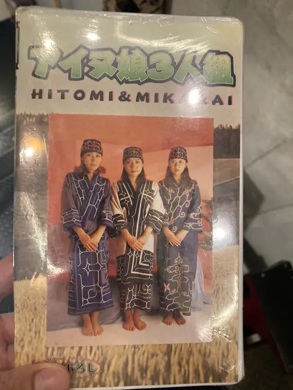
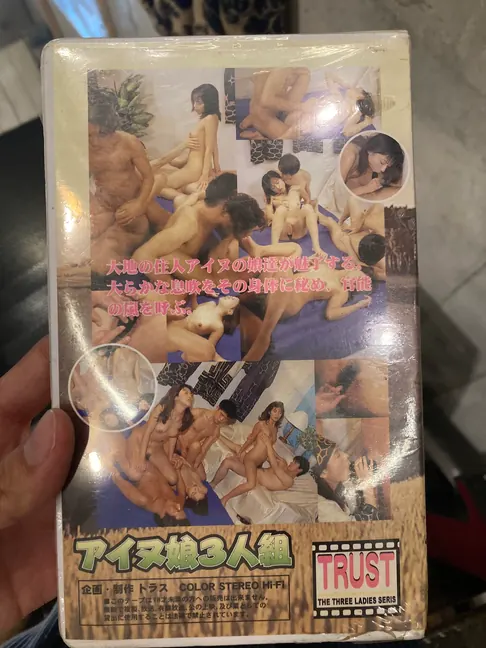
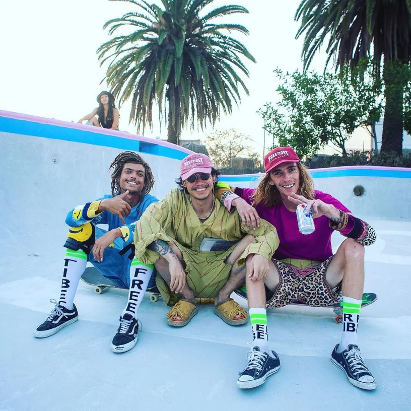
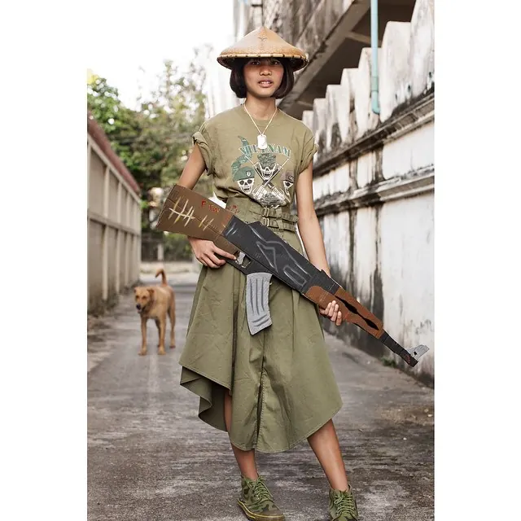
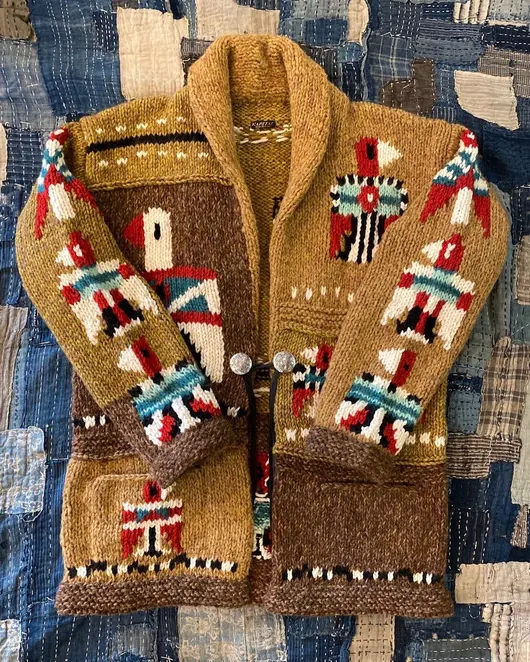
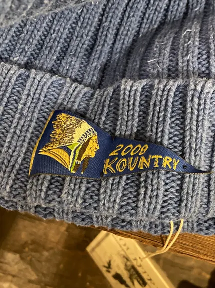
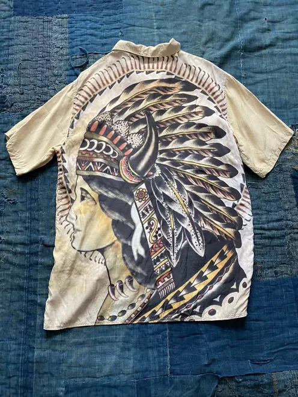
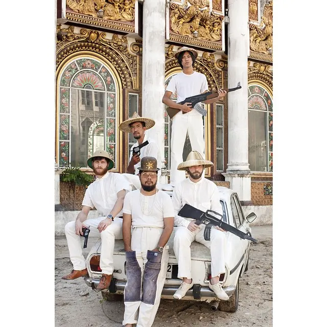
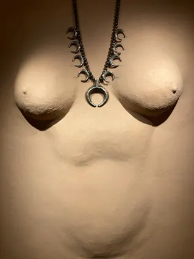
1. Ainu Association of Hokkaido. (n.d.).
https://www.ainu-assn.or.jp/english/life.html
2. The population of Poverty USA. Poverty Facts. (n.d.). https://www.povertyusa.org/facts
The poverty line in 2018 for individuals was $12,768


ざっし（Za ]
ｋ。ンタクト
SHI
ツ